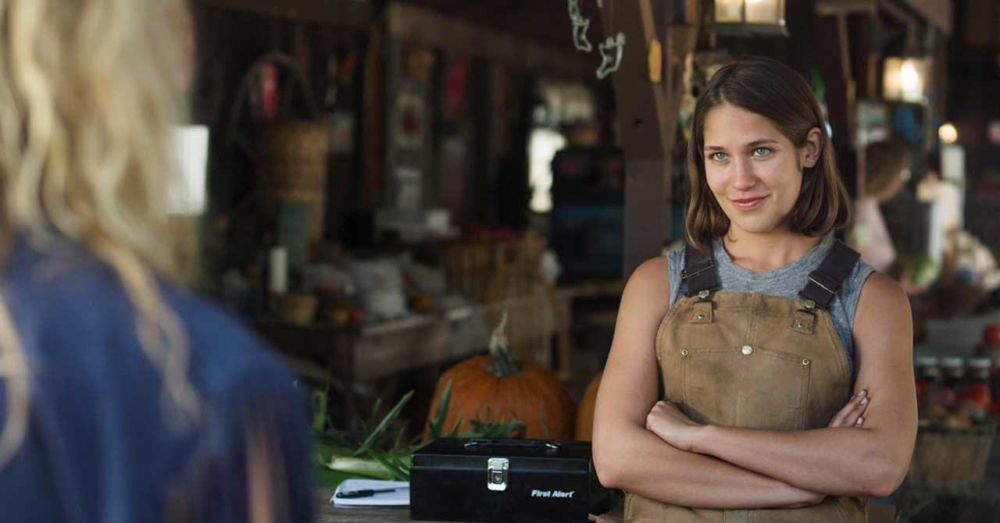

Wheelhouse Pictures is a full service creative production company that focuses on character driven narratives and unseen communities
About Wheelhouse Pictures
Jessica Caldwell
A graduate of Columbia University’s MFA program, Jessica produced Electrick Children which premiered at Berlin and SXSW 2012 and was distributed by Phase 4 films in Spring 2013.
Her short film work has premiered at Sundance, Telluride and Tribeca. She recently wrapped production on Stephen Elliott’s Happy Baby.
Andrew Hauser
Andrew graduated from Columbia University’s MFA program in 2012. He served as Associate Producer on Four, which received an Independent Spirit Award nomination for its lead actor, Wendell Pierce. His Post Production Supervision credits include Electrick Children, Syrup and the upcoming Cold Comes the Night.
Shorts he produced have played at Clermond-Ferrand, Palm Springs, Fantastic Fest and Raindance.
Current Slate
My First Kiss, and the People Involved
A unique coming of age thriller told through the eyes of Sam, a girl living with autism. A glimpse into an exciting mind, from first time feature director Luigi Campi. http://www.myfirstkissmovie.com

AWOL
A drama/romance about Joey, a 19 year old girl who wants to run away from the Army with her older female lover Rayna before she’s deployed to Afghanistan. Based on Deb Shoval’s award-winning Sundance short of the same name, a selection of the IFP Narrative Lab, Film Independent Fast Track and a recipient on the Jerome Foundation grant.
Penny Dreadful
A dark comedy about a kidnapping gone terribly wrong. Shane Atkinson’s directorial debut was featured on the Blacklist in 2012.
Stick & Chub
A quirky dramedy set in the world of Olympic athletes and competitive running by Jeremy Teicher (Tall as the Baobab Tree).